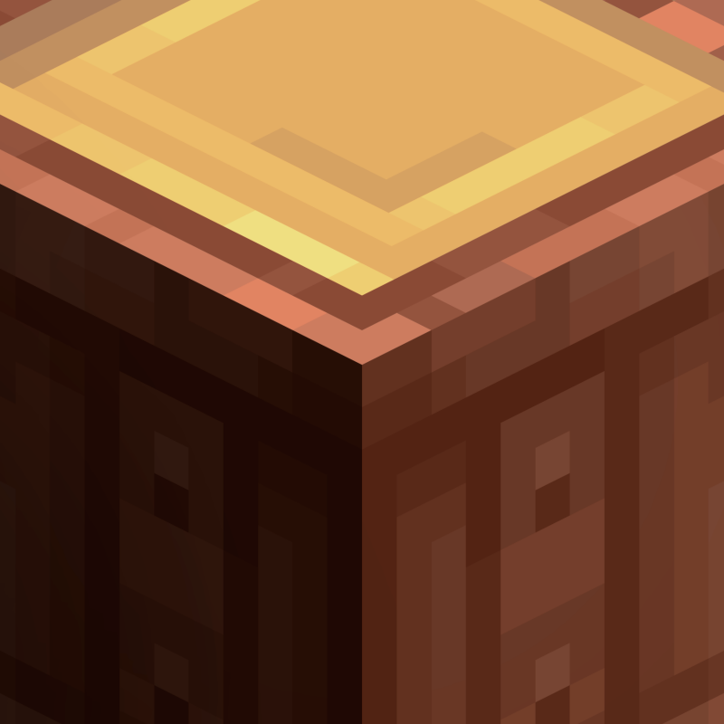
[Let's Do] Brewery
共 65 个条目 · brewery
版本: 2.1.9 · 来源: letsdo-brewery-neoforge-2.1.9.jar
Ozapft is! Brau Bier, beiss in a Bretzn – willkomme zum Braufescht!
官方介绍 （Modrinth · 联网获取）
Festive Brews & Rustic Revelry
The spirited extension to Farm & Charm
"Crafted by cask and time"
Brewery brings the spirit of celebration into your world. Dry your ingredients, tend the barrels, refine your recipes and pour drinks worthy of a true brew festival.
Ozapft is. Brew beer, craft whiskey and turn your village into a lively festival ground.
This version offers improved compatibility with [Let's Do] Farm & Charm, adding more items, refined recipes and expanded brewing features.
From Grain to Glass
- Drying, brewing and drinking
- Brew your own Beer
- Brew your own Whiskey
- Refine ingredients and age your creations
Patience makes the perfect pour.
Dress for the Festival
- Visit the Brew Festival and get yourself some beautiful attire
- Lederhosen, traditional shirts and Dirndl
- Embrace Bavarian-inspired festive fashion
Dress for the celebration. Brew like a master.
Build Your Tavern
- New Building Blocks and Food Blocks in Oktoberfest style
- Decorative elements inspired by traditional brew halls
- Create your own rustic tavern or festival grounds
Design your own tavern. Tap fresh from the barrel.
Have fun brewing!
Requires [Let's Do] Farm & Charm
Dedicated to MissLilitu
Let’s Do grows through its community.
资料来源：[Let's Do] Brewery - Farm&Charm Compat（自动匹配，仅供参考）
物品与方块
 酒吧柜台
酒吧柜台brewery:bar_counter · 方块
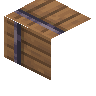
大木桶brewery:barrel_head_right · 方块
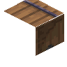
大木桶brewery:barrel_main · 方块
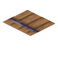
大木桶brewery:barrel_main_head · 方块
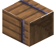
大木桶brewery:barrel_right · 方块
 大麦啤酒
大麦啤酒brewery:beer_barley · 方块
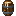
啤酒人刷怪...桶？brewery:beer_elemental_spawn_egg · 物品
 海莉啤酒
海莉啤酒brewery:beer_haley · 方块
 酒花啤酒
酒花啤酒brewery:beer_hops · 方块
 啤酒杯
啤酒杯brewery:beer_mug · 方块
 Nettle Beer
Nettle Beerbrewery:beer_nettle · 方块
 Oat Beer
Oat Beerbrewery:beer_oat · 方块
 小麦啤酒
小麦啤酒brewery:beer_wheat · 方块
 长凳
长凳brewery:bench · 方块酒精测定仪
brewery:breathalyzer · 物品
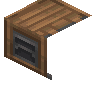
酿造站brewery:brew_oven · 方块
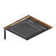
酿造站brewery:brew_timer · 方块
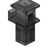
酿造站brewery:brew_whistle · 方块
 Brewery Banner
Brewery Bannerbrewery:brewery_banner · 方块啤酒节短衬衫
brewery:brewfest_blouse · 物品啤酒节靴子
brewery:brewfest_boots · 物品啤酒节连衣裙
brewery:brewfest_dress · 物品啤酒节蓝色帽子
brewery:brewfest_hat · 物品啤酒节红色帽子
brewery:brewfest_hat_red · 物品啤酒节礼服
brewery:brewfest_regalia · 物品啤酒节鞋子
brewery:brewfest_shoes · 物品
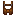
啤酒节裤子brewery:brewfest_trousers · 物品
 橱柜
橱柜brewery:cabinet · 方块
 铜酿造站
铜酿造站brewery:copper_brewingstation · 方块
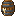
Dark Brewbrewery:dark_brew · 物品
 抽屉
抽屉brewery:drawer · 方块
 袋装烘干的大麦
袋装烘干的大麦brewery:dried_barley · 方块
 袋装烘干的玉米
袋装烘干的玉米brewery:dried_corn · 方块
 Dried Oat
Dried Oatbrewery:dried_oat · 方块
 袋装烘干的小麦
袋装烘干的小麦brewery:dried_wheat · 方块
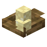
土豆饺子brewery:dumplings · 方块
 炸鸡肉
炸鸡肉brewery:fried_chicken · 方块
 心形姜饼
心形姜饼brewery:gingerbread · 方块
 HadariYao风味烤半鸡
HadariYao风味烤半鸡brewery:half_chicken · 方块
 啤酒花
啤酒花brewery:hops · 物品?啤酒花种子
brewery:hops_crop · 物品
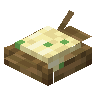
土豆泥brewery:mashed_potatoes · 方块
 下界合金酿造站
下界合金酿造站brewery:netherite_brewingstation · 方块
 brewery:patterned_carpet
brewery:patterned_carpetbrewery:patterned_carpet · 物品
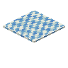
花纹地毯brewery:patterned_carpet_block · 方块
 花纹羊毛
花纹羊毛brewery:patterned_wool · 方块
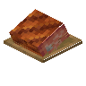
猪肘brewery:pork_knuckle · 方块
 土豆沙拉
土豆沙拉brewery:potato_salad · 方块
 扭结面包
扭结面包brewery:pretzel · 物品?绳索
brewery:rope · 物品
 香肠
香肠brewery:sausage · 物品
 餐具柜
餐具柜brewery:sideboard · 方块
 桌子
桌子brewery:table · 方块
 壁橱
壁橱brewery:wall_cabinet · 方块
 §cAK Reserve
§cAK Reservebrewery:whiskey_ak · 方块
 Carrasconlabel威士忌
Carrasconlabel威士忌brewery:whiskey_carrasconlabel · 方块
 CristelWalker威士忌
CristelWalker威士忌brewery:whiskey_cristelwalker · 方块
 Highland Hearth Signature
Highland Hearth Signaturebrewery:whiskey_highland_hearth · 方块
 Jameson Malt Whiskey
Jameson Malt Whiskeybrewery:whiskey_jamesons_malt · 方块
 JoJannik威士忌
JoJannik威士忌brewery:whiskey_jojannik · 方块
 Lilitu单一麦芽威士忌
Lilitu单一麦芽威士忌brewery:whiskey_lilitusinglemalt · 方块
 MaggoAllan威士忌
MaggoAllan威士忌brewery:whiskey_maggoallan · 方块
 Smokey Reverie, Barrel-Aged
Smokey Reverie, Barrel-Agedbrewery:whiskey_smokey_reverie · 方块
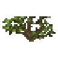
野生啤酒花brewery:wild_hops · 方块
 木酿造站
木酿造站brewery:wooden_brewingstation · 方块